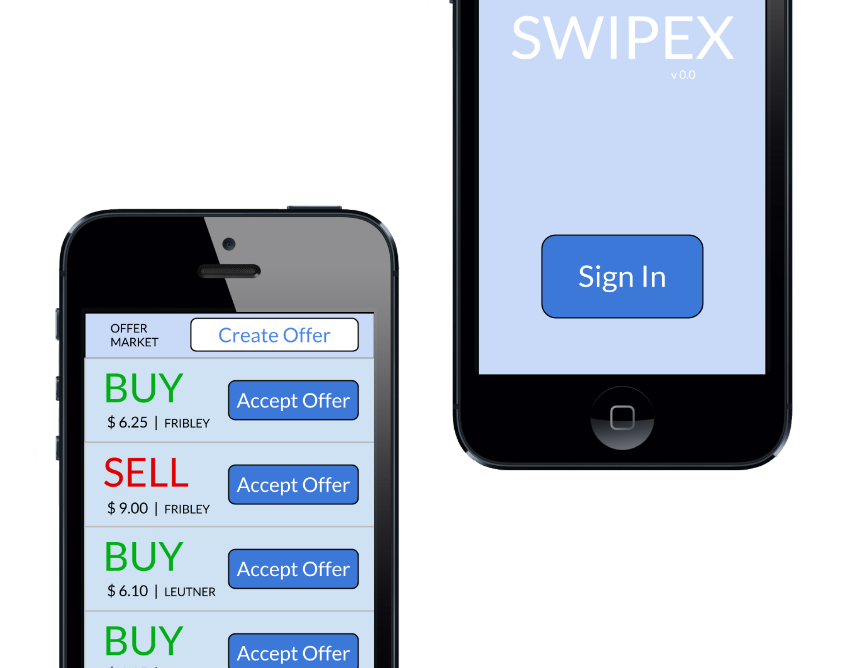

Swipe
In short, Case Western requires 1st and 2nd year students to purchase too many meal swipes. Many 3rd and 4th year students who live on campus aren't allowed to buy them. This app will enable young students to sell extra meal swipes to older students who don't want to carry a lunch around all day. It will be dropping on Case like an atomic bomb next semester.
